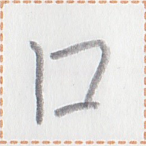
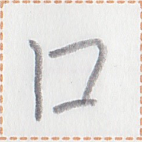

← Previous
Index
Next →
English: Ms. Yark would not like to eat anything.
Chinese: 律小姐不想吃东西。
Chinese (pinyin): Lǜ xiǎojiě bù xiǎng chī dōngxi.
Pekzep (latin transcription): iak1 xizi mun1 hia1 iam1.
Pekzep (hanzi transcription): 律xizi無心口。
Pekzep (linzklā): 


 

Sound:
Analysis: